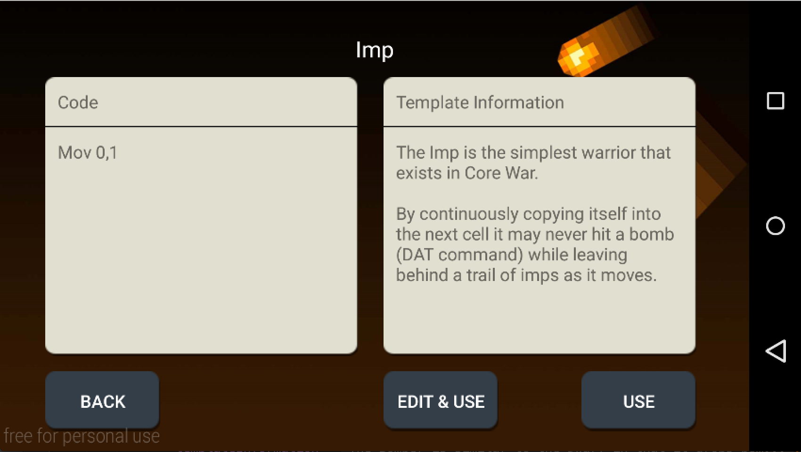
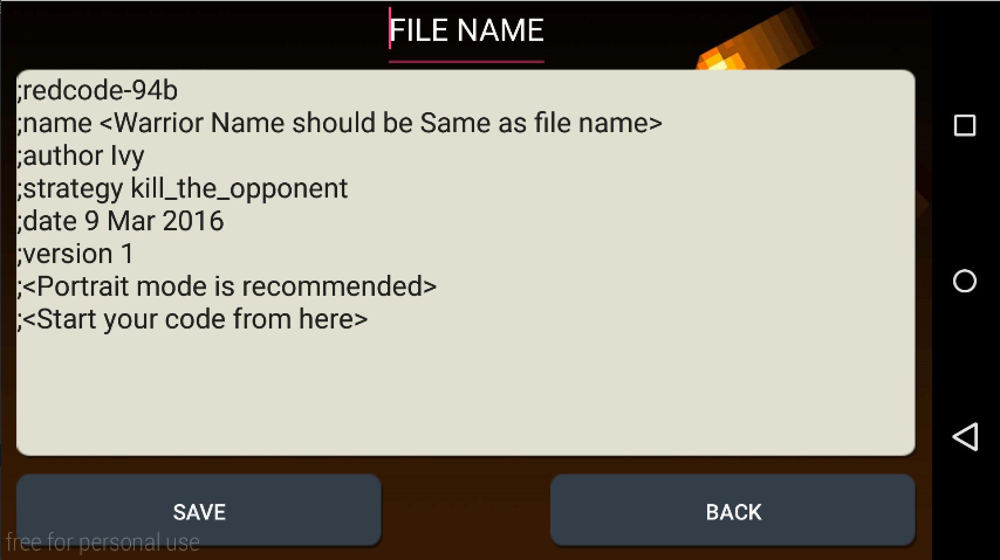
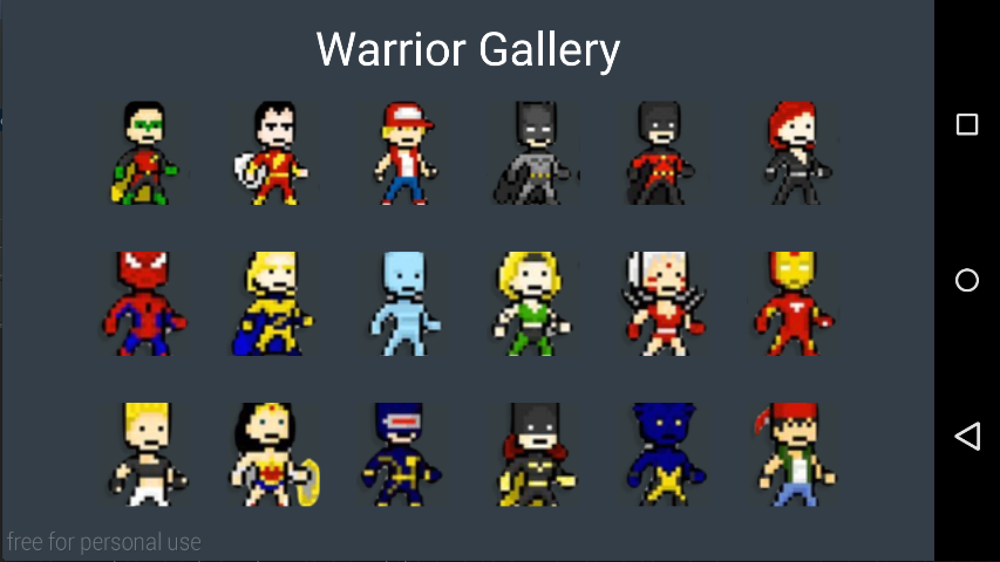
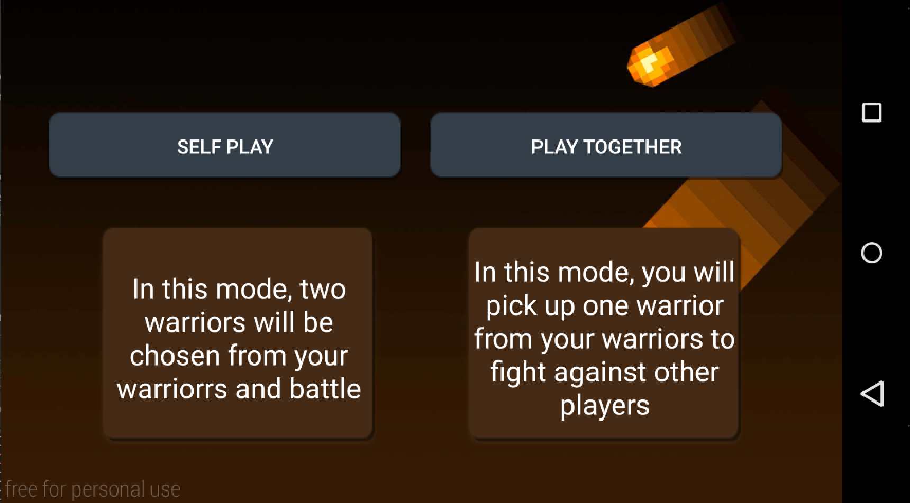
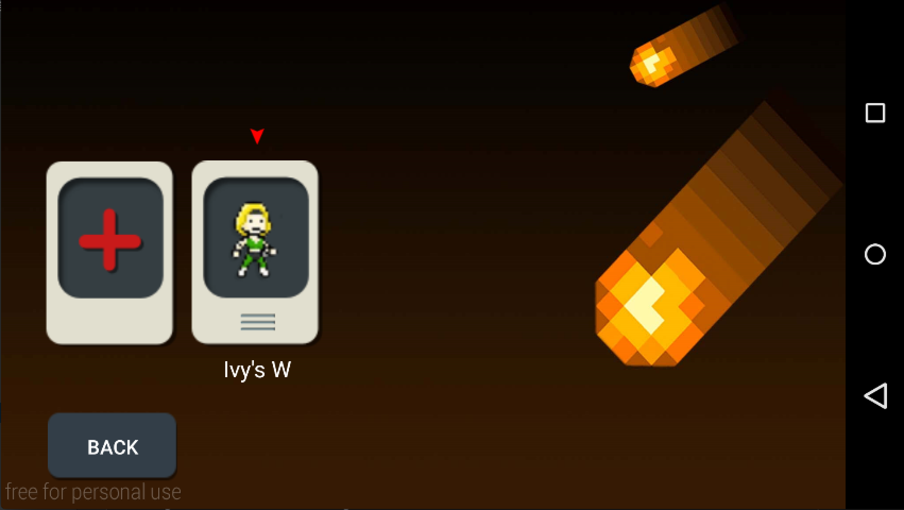

At the beginning of a game, each battle program is loaded into memory at a random location, after which each program executes one instruction in turn. The object of the game is to cause the processes of opposing programs to terminate (which happens if they execute an invalid instruction), leaving the victorious program in sole possession of the machine.
What we are done is transfer the classic game into the mobile era based on Android Platform.
As there are currently no mobile adaptations of the game on either the two of the most popular Android or iOS platforms, and as a result we had no basis to go on for our game. Considering abundant settings as well as functions in the classic PC version will cause confusion to starters, we decided to simplify the whole version game and keeping the functions which are esstential. To get a better understanding of the game and decide on the parts which should be remained, we studied the previous software and tried them out.
We designed several user cases and picked three as our target user:
| User Stories | Our Solutions |
|---|---|
| As a novice programmer, I want a game that gives me a basic taste of low level programming but without too much difficulty. |
- Offer default warrior template to be chosen from as well as the code of them for in-experience player to play and learn.  - Be able to create and edit code for their own warriors with the assistant template.  - Offer relative guides and links to help users quickly get into the game. |
| As a casual gamer, I want a game that is well-designed, full of fun and will help kill spare time |
- Design the game which is easy to access and playful.  - Have multiple modes to choose, allow battles with friends.  - Game scores are reported every time. |
| As a player today, I would like to switch devices with my DIY warriors. |
- Allow players to create account for the game with usernames and passwords to store and manage their own warriors.  |
The main features of the game was firstly determinated based on the suggestions from experienced corewar players as well as our opinions as targeting novices considering the all user cases above. Soon later three versions of the prototyps are built and evolved frequently according to the feedback from users.